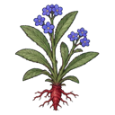
Alkanet
A plant with narrow hairy leaves, small red or blue flowers and a thick red root.
53 plants: medicinal herbs, poisons, alchemy ingredients, crops, dyes, flowers and trees. Sowable ones appear in a growing zone's plant list once a grower has the skill shown.

A plant with narrow hairy leaves, small red or blue flowers and a thick red root.
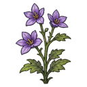
A three-foot herb with purple petals. Harvested, it gives all-heale, a fair herbal medicine.
A spiky succulent full of cooling gel.
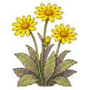
A mountain flower with bright yellow, daisy-like heads.
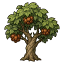
A coastal tree whose nuts stop bleeding. Chopped, it gives ordinary wood.
A rare rose with black, velvety petals and long white thorns.
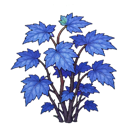
A delicate shrub with gleaming blue maple-like leaves.
A low herb with small daisy-like flowers that smell of apples.
A short-lived plant with one big red bloom that bursts into flame when pollinated.
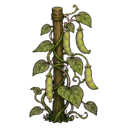
A climbing bean vine. A hardy, filling crop.
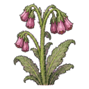
A three-foot herb with rough, hairy stalks and pink-mauve flowers. Its leaves make a healing poultice.
A climbing vine with huge heart-shaped leaves and bunches of green-white flowers.
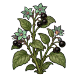
A bushy plant with dull purple flowers and glossy black berries.
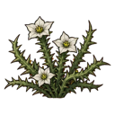
A sandy-wash annual with white flowers; a poison herb.
A pure-white mushroom with a lace collar halfway down its stalk.
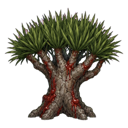
A squat, ancient tree with an umbrella of spiky leaves. Cut, it bleeds dark red resin instead of giving wood.
A purple coneflower whose root strengthens the body against sickness.
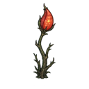
A leafless stalk ending in one bright red pod.
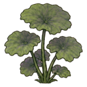
A big-leafed bog herb with a musty smell. Its leaves give a hallucinogenic smoke.
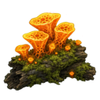
An orange, spongy fungus that glows faintly in damp dens and hollow logs.
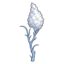
A wiry, pale blue herb with a fluffy white tuft. Its oil chills weapons.
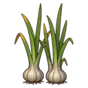
A tall leek-like plant with a pungent bulb.

A rare tree with wood of a wonderful gold shade.
A vine heavy with purple grapes.
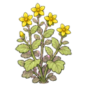
A small garden herb with bright yellow flowers. Its leaves give a wound-closing oil.
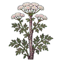
A tall plant with purple-spotted stems and lacy white flowers. Deadly poisonous.
A slow-growing tree with dark, iron-hard wood.
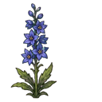
A tall flower with blue-purple blossoms and poisonous black seeds.
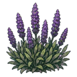
A knee-high bush with spikes of purple flowers and a soothing scent. Pretty, and a mild medicine.
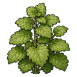
A bushy herb with fragrant, lemon-scented leaves.
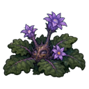
A low rosette of dark leaves over a forked, man-shaped root.
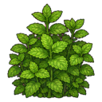
A spreading herb with fresh-smelling leaves.
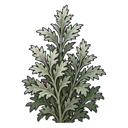
A grey-green bitter herb with silvery undersides.
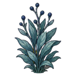
A rare blue-grey herb smelling of nutmeg. It sharpens the senses.
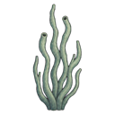
A pipe weed of the cold seas that wards off the cold when smoked.
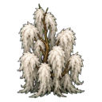
A shaggy tundra plant wrapped in fluffy white fibre.
An overgrown mushroom that glows with a warm blue radiance.
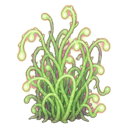
A stringy weed that would be thoroughly generic if it did not glow a soft green in the dark.
A purple crocus whose red threads are a costly spice and dye.
A plant that looks like a carving of ice stuck in the ground.
A swamp tree with silvery bark and pale leaves.
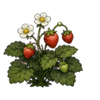
A low plant with sweet red berries.
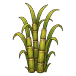
Tall jointed canes full of sweet sap.
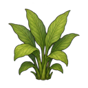
A leafy tropical plant with a golden-orange root.
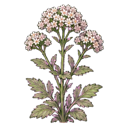
A tall herb with clusters of small pink-white flowers and a pungent root.
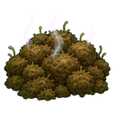
A brown moss that grows only in the driest places.
A pale lotus flower that blooms in still marsh water.
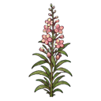
A tall stem with spikes of pink flowers and willow-like leaves. Chewed, it dulls pain.
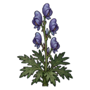
A small plant with deeply cut black-green leaves and tiny white flowers. Poison to beasts and men alike.
A rare metallic-blue mushroom with yellow gills that grows in damp, dark places.
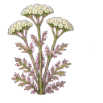
A tall herb with feathery leaves and flat clusters of white flowers. It stanches bleeding.
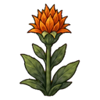
A rare herb with foul-smelling orange flowers. Its root is one of the best healing herbs there is.
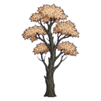
A southern tree with black bark and wood and pale leaves. Its wood is strong yet easily worked.